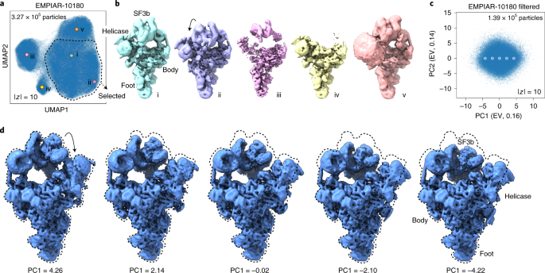

PLY Sequence Converter
A Blender plugin built to visualize CryoDRGN output by rendering dynamic protein conformations. Converts voxel-based CryoDRGN results to point cloud `.ply` mesh sequences, reducing memory usage by 97%. Upgrades legacy Stop Motion OBJ support for Blender 4.0+, enabling seamless import and real-time rendering of complex protein shape transitions.
- Python
- Blender
- CryoDRGN
- Point Cloud